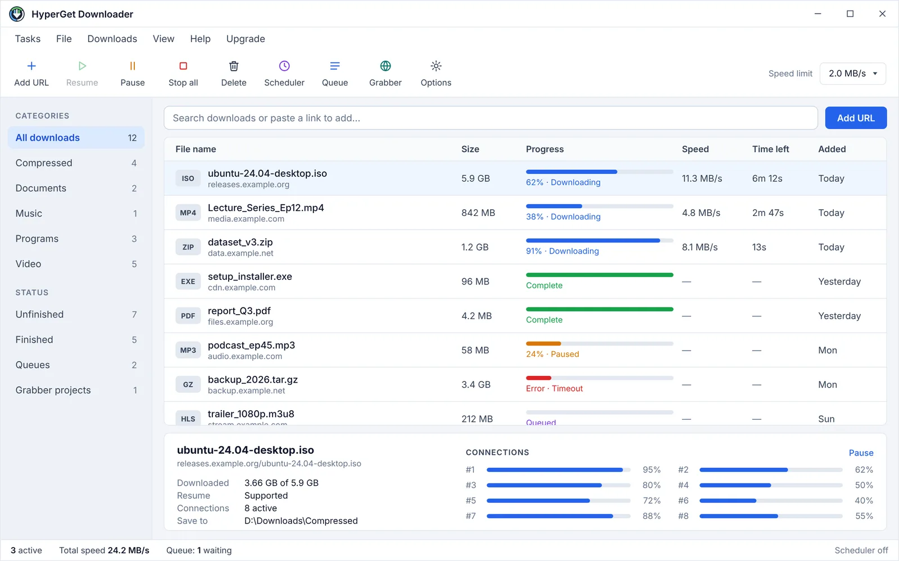
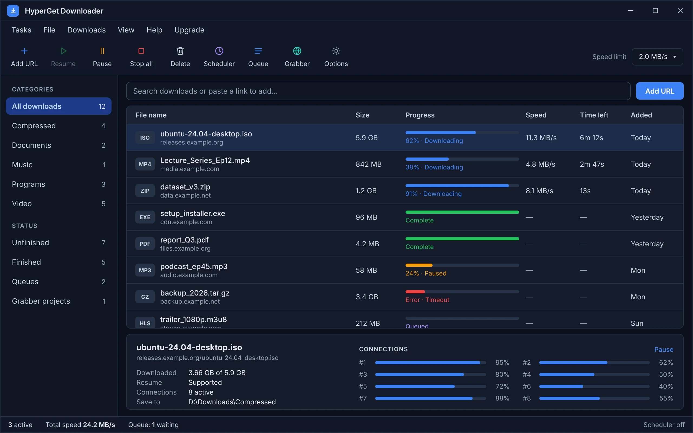
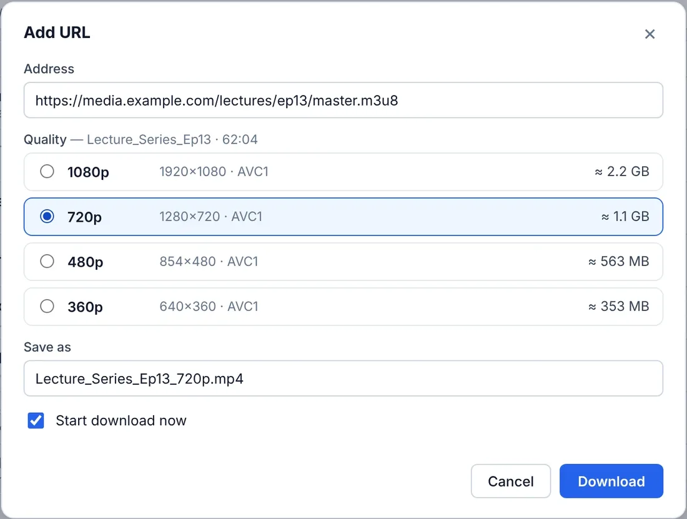
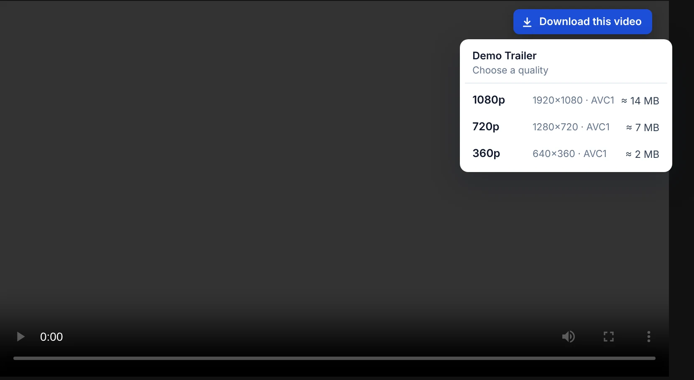

Eight connections.
One file. Done sooner.
HyperGet splits every download into byte ranges and fetches them side by side. It picks up where it stopped after a dropped connection or a restart, and saves streaming video in the quality you choose.
Version 0.1.0 · Windows 10 and 11, 64-bit · Installer or portable


The main window: categories, live speed per download, and every connection of the selected file.
Why a split download finishes first
Many servers cap the speed of each single connection. HyperGet opens several to the same file and keeps every one of them busy until the last byte.
Ask before fetching
A one-byte request reveals the file's real name, its exact size, and whether the server accepts byte ranges.
Split into ranges
The file is divided into up to eight ranges, one per connection, written straight into place on disk.
Rebalance at the end
When a connection finishes early it takes half of the biggest range still left, so no connection sits idle at the end.
Everything a long download needs
Resume after anything
Wi-Fi drops, the laptop sleeps, or you close the app: progress for each range is saved, and the download continues from the same byte.
Speed limit
Cap HyperGet at 512 KB/s, 2 MB/s or any value so video calls and games keep their bandwidth. The limit is shared across all downloads.
Queue and scheduler
Choose how many files run at once, and start the queue at 02:00 and stop it at 07:00 every day.
Grabber
Point it at a web page and it lists every linked file (archives, PDFs, installers, audio, video) so you can tick the ones you want.
Sorted automatically
Files land in Compressed, Documents, Music, Programs or Video inside your Downloads folder, named the way the server named them.
Light and dark
A clean window with a details panel for the selected file, keyboard shortcuts, and a dark theme for late-night queues.
Pick the quality before you save
Paste a stream or video page link and HyperGet lists every quality it offers, with the resolution and an estimated size, before a single byte is saved.
- HLS streams. Master playlists, separate audio tracks and standard AES-128 encrypted segments.
- Video sites. YouTube and many other sites through the bundled yt-dlp extractor, from 144p up to the highest quality the site offers, or audio only.
- One MP4 at the end. Video and audio are merged with the bundled FFmpeg, ready for any player.
Save only what you have the right to keep. DRM-protected services such as Netflix or Spotify are not supported.

A download button on every video
Hover a video in Chrome or Edge and a Download this video button appears. Choose a quality and HyperGet takes it from there.
- Detects media on the page. The toolbar icon counts the streams and files each tab loads.
- Takes over normal downloads. Files over 1 MB go to HyperGet with your sign-in cookies, so links that need a login still work. If the app isn't open, the browser downloads as usual.
- Right-click any link. "Download with HyperGet" on links, images, audio and video.

Get HyperGet 0.1.0
Both versions include FFmpeg, yt-dlp and the browser extension folder. Nothing else to install.
- System
- Windows 10 or 11, 64-bit
- Needs
- Microsoft Edge WebView2, already part of Windows 10 and 11
- First run
- If SmartScreen shows "Windows protected your PC", choose More info, then Run anyway
Before you install
Is every download really faster?
When the server limits each connection, which many do, splitting the file can multiply your speed up to your line's limit. If your connection is already the bottleneck, HyperGet won't beat it, but you still get resume, the queue and the scheduler.
What happens if the server doesn't support resuming?
HyperGet notices during its first request and downloads over a single connection instead. The details panel shows "Resume: Not supported by server" so you know an interrupted download will restart from zero.
Can it download from YouTube?
Yes, through the bundled yt-dlp extractor, with a choice of quality. Check each site's terms, and only download videos you own or have permission to save.
Why won't it save Netflix, Disney+ or Spotify?
Those services encrypt their streams with DRM. HyperGet doesn't break DRM, and it tells you when a stream is protected instead of saving an unplayable file.
Does the extension send my browsing anywhere?
No. It only talks to HyperGet on your own computer at 127.0.0.1. The app refuses requests from ordinary websites, so a web page can't start downloads behind your back.
Is there a Mac or Linux version?
Not as an installer yet. HyperGet runs from source on macOS and Linux with Python 3.10 or newer; the README on GitHub has the steps.